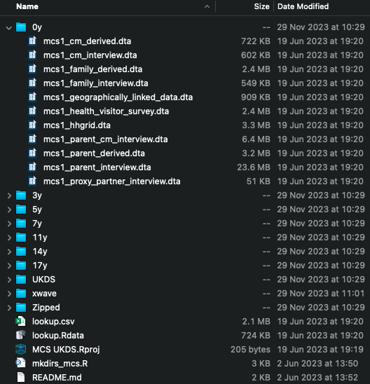

1 Introduction
Longitudinal data represent a rich seam of information for use in quantitative research. Longitudinal data are often interesting in their own right - for instance, in capturing change over the life course - but can also be helpful instrumentally - for instance, to support causal inference, temporality being a key criterion for causality.
Longitudinal data are used in many scientific disciplines, and many longitudinal datasets now exist - see Louise Arseneault’s Atlas of Longitudinal Datasets for a comprehensive overview. The Centre for Longitudinal Studies (CLS) runs several cohort studies, including the 1958 (National Child Development Study, NCDS) and 1970 (British Cohort Study, BCS70) British birth cohorts, Next Steps (formerly, the Longitudinal Study of Young People in England), and the Millennium Cohort Study (MCS). Each is fabulously rich and collectively have been used - and continue to be used - in thousands of research studies. We’ll use data from the NCDS and MCS in this course.
What perhaps distinguishes longitudinal data analysis from other types of data analysis is the efforts involved in preparing the data for analysis and in translating results into presentable formats (e.g., tables and plots). Longitudinal data usually have complex data structures, with data split across multiple files, and data collection ‘sweeps’ frequently accompanied with changes to documentation, metadata or variable coding. Even though the same construct may have been measured in multiple sweeps, it is often the case that variable names do not follow a common schema nor use consistent coding over time. Metadata standards may have been lacking, especially for earlier ‘sweeps’ of older studies. For instance, variable names might not be descriptive, have senseful variable or values labels, nor use consistent missing data codes. (In the NCDS, the variable n622 records a cohort member’s sex, for example.) Further, early survey questionnaires may only be available as scanned images, rather than in machine-readable formats, and not annotated with variable names. The upshot of this is that getting to grips with a longitudinal dataset can be a time-intensive task. An aim here is to show how R can make this process much easier.
Additional complexity arises from the presence of missing data, which is common in longitudinal data due to attrition (i.e., participants dropping out of the study over time) and item non-response (i.e., participants not answering specific questions). Missingness requires careful consideration and handling during analysis: for instance, correctly identifying the target analysis sample, deriving non-response weights, and using multiple imputation. Moving between preparation and analysis steps can require restructuring data, too - e.g., imputing data in wide format, but estimating regression models in long format. Further, coefficients from longitudinal regression models may not be of direct interest. Instead, calculated quantities, such as marginal effects, may be. For instance, in growth curve modelling, where one models trajectories of an outcome over the life course, one may wish to determine a marginal effect at a specific age, rather than simply look at the coefficients, standard errors and confidence intervals for the intercept and slope terms - these depend on how the time variable is centered, in any case, and may not be directly interpretable. To be done effectively and efficiently, each of these tasks requires programming skills that are not often taught.
By its very nature, some steps in LDA can be repetitive - for instance, one may want to repeat a regression at different follow-up sweeps or wish to clean a variable captured in several sweeps in the same way. Automating such tasks is important to reduce the risk of errors, as well as to work efficiently. Learning how to do this can also increase the ambitiousness of one’s research in general, even for applications that do not use longitudinal data - for example, skills for ‘repeating yourself’ can be used to undertake Specification Curve Analysis (Simonsohn et al., 2020), a ‘many models’ approach that requires specifying and running a universe of models.
1.1 Purpose of the Course
This course introduces R for LDA, using data from two of CLS’s cohort studies, the NCDS and MCS. The course is aimed at researchers who have some knowledge of R, and who have some experience of the aims of LDA. The focus is on the practical tasks involved in LDA, rather than the statistical theory of longitudinal regression modelling. Courses on regression modelling already exist (Bristol’s LEMMA course is especially fine), but few courses focus on other aspects, which take up an inordinate amount of analysts’ attention - one estimate in the New York Times suggested over half of data scientists’ time is spent on finding, cleaning and preparing data.
Over six interactive sessions, this course covers:
- An Introduction to
Rand thetidyversefor LDA- Necessary
Randtidyverseskills called on and developed further throughout the course
- Necessary
- Data Discovery
- Tools for finding relevant variables programmatically using
R
- Tools for finding relevant variables programmatically using
- Munging Longitudinal Data
- Techniques for cleaning and restructuring longitudinal data efficiently
- Calculating Descriptive Statistics
- Methods for calculating descriptive statistics relevant for rigorous LDA
- Estimating, and Working With, Regression Models
- Methods for performing many model approaches and for post-estimation of LDA models
- Presenting Statistical Outputs
- Tools for creating publication-ready tables and plots from LDA results.
Throughout the course, we will use a running example of the association between cognitive ability in childhood/adolescence and body mass index (BMI) in adulthood, a standard analysis in a cognitive epidemiology (Chandola et al., 2006; Deary & Batty, 2007; Wright et al., 2023). We use this example as BMI is collected repeatedly in both the NCDS and MCS, while cognitive ability is measured in various ways, allowing us to illustrate longitudinal data handling and ‘many models’ analysis techniques.
1.2 Coding Approach
When teaching R, one must decide upon an overall programming approach. This course uses the tidyverse, as developed by Hadley Wickham and colleagues at RStudio (now Posit). The tidyverse is a collection of R packages that share a common design philosophy and so work together seamlessly. The tidyverse is also more straightforward to learn and to write code in than Base R, the collection of packages that come pre-installed with R. Basics of the tidyverse will be introduced in Chapter 3, following discussion of some important aspects of Base R (Chapter 2) that will be called up throughout the course.
1.3 Datasets We Will Use
The NCDS is a cohort of 18,588 individuals born in mainland Great Britain in a single week of March 1958. Migrants to the UK, born in the same week, were later added to the cohort using school enrollment forms. Cohort members (or their parents) have been surveyed at birth, 7y, 11y, 16y, 23y, 33y, 42y, 46y, 50y, 55y and 62y, with a biomedical survey at 44y. The MCS is a cohort of 19,515 individuals born in the UK between September 2000 and January 2002. Cohort member (or their parents and even their older siblings) have been surveyed at 9 months, 3y, 5y, 7y, 11y, 14y, 17y and 23y. Most MCS families were recruited at 9 months but a minority (591 families) were recruited at 3y.
Combined, the NCDS and MCS reflect many of the issues and consideration that arise when working with longitudinal data. As discussed, as an older study, NCDS has issues around changing (and lacking, at least in earlier sweeps) metadata standards. On the other hand, MCS has data that are more consistently documented, making it more ripe for automation. The MCS also has more complex data structures, including containing cohort member-, family-, parent-, and parent x cohort member-level datasets, which can be tricky to work with.
NCDS and MCS data are available for free on the UK Data Service, but have to be downloaded by each data collection ‘sweep’, separately. To make working with the data easier, we have produced code to organise the data files (once downloaded) into a consistent directory structure with sub-directories for each study sweep, named by cohort members’ age at data collection (see below). The code in this textbook assumes data are in Stata (.dta) format and organised as in the linked code.

CLS has produced a data handling guide for both studies, but a few things should be made clear now:
- The variable containing the unique cohort member identifier in the NCDS is called
NCDSIDor, in some datasets,ncdsid. - The vast majority of NCDS datasets are cohort member level - i.e. have one row per cohort member.
- Individuals in the MCS are identified with a combination of two variables. For cohort members, this is
MCSID(the family identifier) andXCNUM00(the within-family cohort member identifier) whereXis a letter denoting sweep (e.g.,ACNUM00in Sweep 1,BCNUM00in Sweep 2, etc.).XCNUM00equals 1 or 2, with 2 reserved for one of the two twins from a twin family.MCSIDandXCNUM00persist across sweeps. - Other MCS family members can be identified by combining the variables
MCSIDandXPNUM00- again,Xis a letter denoting sweep.XPNUM00 < 100for non-cohort members andXPNUM00 = XCNUM00 * 100for cohort members. Values for non-cohort members are arbitrary and do not correspond to a specific relationship (e.g.,XPNUM00 = 1is not necessarily a cohort member’s mother).MCSIDandXPNUM00also persist across sweeps. - Files in both the MCS and NCDS have rows for individuals for whom data was collected from. Cohort member files can therefore be used to determine who responded (or, in some case, had proxy respondents for) in a specific sweep. However, both studies also include longitudinal response files which provide response codes for each individual for every sweep.
- Later sweeps of NCDS and all sweeps of MCS use consistent variable naming structures, with variable names prefixed with a stub indicating sweep. In the MCS, this is a letter denoting sweep (
Ain Sweep 1,Bin Sweep 2, …,Gin Sweep 8). Similar variables share similar names across sweeps (e.g.,XCHTCM00for height). MCS also uses a consistent file name rubric, which is of the formmcs{sweep}_{respondent}_{type}.dta- for instance, the Sweep 6, cohort member interview is inmcs6_cm_interview.dta. - An exception to these rules is Sweep 8, where (as downloaded from the UKDS) the file paths also contains information information on age at follow-up (
mcs8_23y_cm_interview.dta) and variables are in lower case. I have shared files removing this age and made variables upper case to make working programatically a little easier. Note, Wave 5 also contains a small deviation from the usual variable naming rubric. - The
mcs[1-7]_parent_cm_interview.dtafiles contain information from parents about their relationship with a cohort member. Both parents took this interview, so there may be multiple rows per individual cohort member. Each parent was interviewed in either a ‘main’ or shorter ‘partner’ interview. Information on which interview a parent completed is stored in the variableXELIG00(withXa letter denoting sweep). Note, who is interviewed for the main interview each sweep can differ, though is usually the cohort member’s mother. In themcs[1-7]_parent_cm_interview.dtadatasets, the variableXPNUM00holds the parent’sPNUM, not the cohort member’s.
1.4 On AI
Before moving on, a word on AI. Frontier LLMs are astonishingly capable at coding (full disclosure, I used the assistance of GitHub Copilot and ChatGPT when writing this book). Despite this, in my opinion, it is still worth learning how to code. LLMs make mistakes and without expertise, one will not have the skills to spot this. Mistakes are particularly likely with longitudinal data as documentation is often poor (e.g., variables not labelled correctly). Less prosaically, learning how to code is also learning a particularly way of thinking. Understanding how to read and write algorithms can help with understanding particular statistical methods (e.g., the bootstrap, random forest) and help provide a sense of what is possible with data and an appreciations of the steps necessary to achieve a specific end.